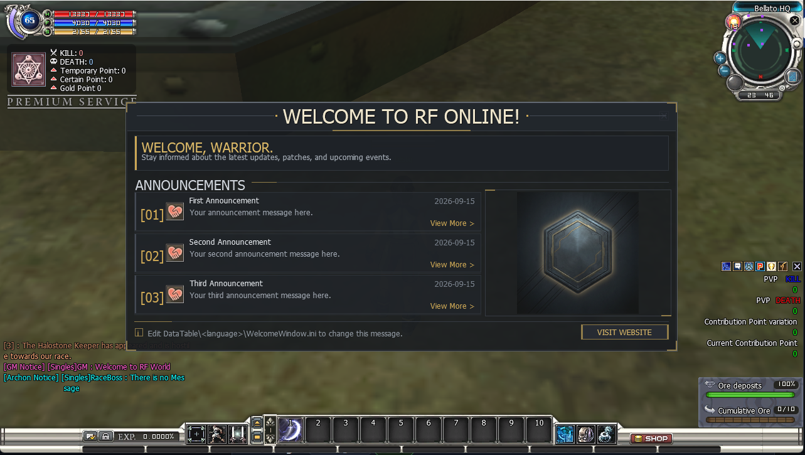

Modules / Features
Optional gameplay and interface features that ship switched off. Each one is turned on by editing a single line in a small text file — no programming, no recompiling.
⚙How modules work
Every module is a small .ini file in the Zone server's .Server\Zoneserver\RF_Bin\Modules\ folder. They all behave the same way:
- One switch. Each file has a
[General]section with anEnablekey.Enable = 0is off,Enable = 1is on. - Off by default. They all ship at
Enable = 0, so nothing changes until you deliberately turn one on. - Required at boot. Do not delete these files — a missing module file stops the Zone server from starting.
- Hot-reloaded. Edit and save the file while the server is running and it picks up the change live. No restart needed.
- Edit with Notepad. Right-click the file → Open with → Notepad, change the number, File → Save.
There are two kinds of module:
- Server — changes something the server does. The player's game client is not told about it.
- Client — changes something the player sees. The server pushes the on/off state to every client when a player enters the world (and after each live reload), so the game client turns its matching half on or off automatically.
| Module | Config file (in Modules\) | Type | What it does |
|---|---|---|---|
| Welcome Window | WelcomeWindow.ini | Client | Announcement window shown once when a player enters the game |
Modules are documented here one at a time, as each one is tested. More will appear in this table once they are verified.
Welcome Window

What it does — and why you would use it
The Welcome Window is an announcement panel that pops up once, when a player first enters the game world. Think of it as the "news board" every MMO shows on login: patch notes, event dates, server rules, a welcome message, and a button to your website.
Use it to:
- Greet players and set the tone for your server.
- Announce the latest patch, event, or maintenance window without posting somewhere players will not look.
- Point players at your website, Discord, or donation page with one click.
The feature has two halves that work together:
| Half | File | Its job |
|---|---|---|
| Server switch | .Server\Zoneserver\RF_Bin\Modules\WelcomeWindow.ini | Decides whether the window opens at all. One Enable key. |
| Client content | .Client\DataTable\<language>\WelcomeWindow.ini | Decides what is inside the window: the text, announcements, footer and website button. |
The window appears once per play session. If you later flip the switch on the server, players already in the world are not interrupted with a second popup — they see it on their next entry.
How to activate it
-
Turn the feature on (server). Open .Server\Zoneserver\RF_Bin\Modules\WelcomeWindow.ini in Notepad and change the
Enableline under[General]:
Save the file. A running Zone server reloads it immediately and pushes the new state to clients; if the server is not running yet it simply starts with the feature on.[General] Enable = 1 -
Write the message players will see (client). Open .Client\DataTable\en-ph\WelcomeWindow.ini (the
en-phfolder is the English language table) and edit the sections described below. Save it. See Write the content. -
(Optional) Add artwork. Drop a
welcome.sprimage into the client to show a banner beside the announcements. See Optional artwork. - Test it. Start the servers, launch the client, log in and enter the world — the window appears. To see edits you made to the text, close and reopen the game client (it reads the file on entry).
Enable = 0 the window never opens, no matter what the client file says. With Enable = 1 but an untouched client file, the window opens showing the shipped sample text. Set the server switch and author the client file.How to write the content (client file)
Open .Client\DataTable\en-ph\WelcomeWindow.ini. The client auto-detects two formats — use whichever suits you. You never need to touch the game's code.
Format 1 — the redesigned announcement panel (recommended)
This is used as soon as the file contains any of the modern keys below. It opens a purpose-built panel with a header, a welcome intro, up to 8 announcements (3 visible at a time, with paging arrows), a footer line and an optional website button.
[Header]
Title = WELCOME TO RF ONLINE
[Welcome]
Title = WELCOME, WARRIOR.
Description = Stay informed about the latest updates, patches, and events.
[Announcement1]
Title = Server Grand Opening
Description = Join us this weekend for double EXP and boss spawns.
Date = 2026-09-15
Enabled = 1
URL = https://example.com/news/1
[Announcement2]
Title = Patch 1.2 Notes
Description = New dungeon, bug fixes and balance changes.
Date = 2026-09-10
Enabled = 1
[Footer]
Message = Thanks for playing on our server!
[Website]
Enabled = 1
URL = https://example.com
Label = VISIT WEBSITEEvery key is optional and falls back to a safe default. Here is what each one controls:
| Section & key | What it does |
|---|---|
[Header] Title | The large heading across the top of the panel. |
[Welcome] Title | The intro headline under the header. |
[Welcome] Description | A one- or two-line intro sentence. |
[Announcement1..8] Title | Announcement headline. An empty title skips that row. |
[AnnouncementN] Description | The announcement body (first two lines are shown per row). |
[AnnouncementN] Date | A short date/label shown on the row. Free text — type whatever you like. |
[AnnouncementN] Enabled | 1 shows the row, 0 hides it. Hidden rows are skipped and the rest renumber automatically. |
[AnnouncementN] URL | Optional. Clicking the row opens this web address (http:// or https:// only). If omitted, the row uses the [Website] URL when that is enabled. |
[Footer] Message | A small line along the bottom of the panel. |
[Website] Enabled | 1 shows the website button, 0 hides it. |
[Website] URL | Where the button goes (http:// or https:// only; it opens in the player's normal browser). |
[Website] Label | The text on the button, e.g. VISIT WEBSITE. |
Format 2 — the legacy message box
If none of the modern keys are present, the client falls back to the classic scrollable message box driven by a single [General] Text line. Handy for a quick one-paragraph notice.
[General]
Text = Welcome to RF Online.\n\nPatch notes and event announcements go here.Authoring rules (both formats)
- One line per value. A real line break ends the value. To break a line inside the window, type the two characters
\n(backslash-n); the window turns it into a line break. - No
;inside a value. A semicolon starts a comment in these files and will cut your text short. - Keep it short. Titles are capped at 128 characters, descriptions and the footer at 256; longer text is truncated, and text wider than its panel is clipped with
.... - Web addresses must start with
http://orhttps://. Anything else is ignored. - Lines starting with
;are comments — the shipped file is full of helpful notes you can leave in place.
Optional artwork
You can show a banner image in a panel to the right of the announcements. It is completely optional — without it the announcement rows simply use the full width.
- The image is a sprite file named
welcome.spr. The client looks for it first in .Client\SpriteImage\<language>\ (for exampleen-ph), then in .Client\SpriteImage\common\. - You make it with
spr2png.exe(in the_tools\folder), a tiny drag-and-drop converter that turns a normal PNG into a.spr— and back again. No commands, no Python, nothing to install.
Make new artwork
- Save your banner as a PNG named
welcome.png. A power-of-two size such as 256×256 works best. - Drag
welcome.pngontospr2png.exe. A black window flashes and writeswelcome.sprin the same folder as your PNG. - Copy that
welcome.sprinto .Client\SpriteImage\common\ (or your<language>folder), then restart the game client to see it.
Edit artwork you already have
- Drag the existing
welcome.sprontospr2png.exe. It writes an editablewelcome.pngbeside it. - Open that PNG in any image editor, change it, save it.
- Drag the edited PNG back onto
spr2png.exe. It rewriteswelcome.sprand keeps your old one aswelcome.spr.bakin case you want to undo.
spr2png.exe <file.spr|file.png> ...
drop a .spr -> <name>.png (multi-frame: <name>_a#_f#.png per frame)
drop a .png -> <name>.spr (previous .spr kept as .spr.bak)- Use a power-of-two size (128, 256 or 512) for best results — the tool only prints a warning otherwise. Non-square art also works; the window scales it to fit.
- No rebuild is needed: the image is loaded when the client starts, so just restart the game client after replacing it.
- To remove the artwork, delete or rename
welcome.spr; the window falls back to full-width rows.
assemble_deploy.bat — but only if the client does not already have one. This is deliberate: re-deploying never overwrites a live host's own patch notes. Delete the file from the client's DataTable folder to re-copy the template.